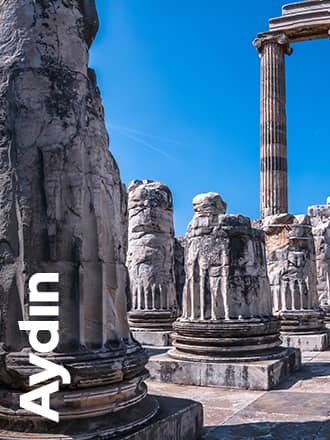
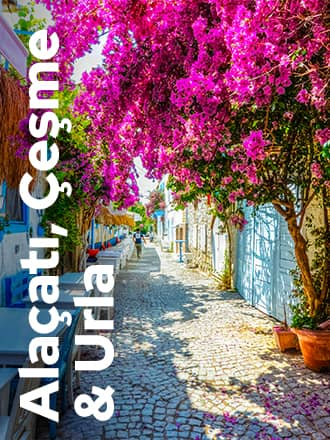

Türkiye destinations
The Maiden's Tower, Cappadocia's fairy chimneys, or Sumela
Monastery?
There are so many places to see in Türkiye!
Traveling in these magical lands, you will wish your trip could
go on forever!

Istanbul is the new cool
İstanbul, the bustling metropolis of Türkiye, is a city full of charm, where the past goes hand in hand with the present and every step brings to light a relic of times gone by.
Cappadocia GoTürkiye
The moonscaped region of Cappadocia, southeast of Ankara, is most famous for its unique geological features called fairy chimneys.
İzmir GoTürkiye
"Beautiful İzmir" draws you into a world of picturesque modernity and traditions, with its refreshing touches to human souls. İzmir hypnotizes visitors in an aura of history and modernity.

Aydın GoTürkiye
The Büyük Menderes Basin (Büyük Menderes Havzası), known as the “Valley of Civilizations” with its favorable climate and fertile land, has witnessed an intense cultural development throughout history.
Turkish Riviera
Magnificent natural beauties, unmatched weather conditions, and deep history! The bright sun and blue sea of the dreamy Turkish Riviera welcomes you year-round. This lush coastal region offers you ancient cities, castles, ports, temples, and much more!

Alaçatı, Çeşme & Urla GoTürkiye
Çeşme is one of the most popular tourist areas of İzmir with itscrystal clear waters, therapeutic thermal waters, historical monuments, vibrant nightlife and beautiful beaches.